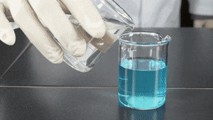
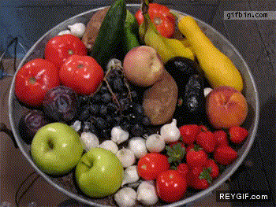

Hola Rocco
💎💎💎
Vas a aprender sobre los cambios de la materia
Elige uno de los temas
Transformaciones Físicas
Estados de agregación
Es la forma en que la materia se presenta
Liquido
- No tiene forma
- Tiene volumen definido
- Son incompresibles, no se pueden achicar usando fuerza
Sólido
- Tiene forma
- Tiene volumen definido
- Son incompresibles
- Suelen ser duros y pueden ser frágiles o rígidos
- Pueden ser deformables - propiedades elásticas

Gaseoso
- No tiene forma
- No tiene volumen definido
- Son compresibles
¿Qué es un cambio de estado?
Es la modificación del ordenamiento de las partículas
Cambios físicos
Es la transformación reversible de la materia de un estado a otro. Se altera su forma no su composición.
Las variaciones de temperatura son una forma de lograr estos cambios
Sólido a liquido
Gaseoso a sólido
¿Qué tal un experimento de condensación?
Transformaciones químicas
A diferencia de los físicos, cambia la composición de la materia, los elementos que la conforman
También se conoce como reacciones químicas, en la cual las sustancias originales (reactivos) se convierten en nuevas sustancias (productos)
Algunas señales...
- Cambio de color
- Cambio de temperatura
- aparición de burbujas
Existen varios tipos de cambios:
Oxidación
Es un proceso químico que produce cambios por la acción del oxigeno o un oxidante. Por ejemplo la corroción por agua salada
Combustión
Transformación por medio de un componente inflamable, llamado combustible(que puede arder) y un comburente(el oxígeno)
Combinación
Dos sustancias se combinan para hacer una nueva. Por ejemplo la sal (cloruro de sodio) a partir del cloro y el sodio
Descomposición
Una sustancia compuesta se degrada en sus componentes
